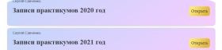

🌟«Эминевтика» – закрытое сообщество учеников РШТ, где можно продолжить общение с единомышленниками после окончания курса «Таро Трансформация».
Здесь регулярно проводятся онлайн-занятия самой разной направленности: работа с раскладами на картах Таро, регрессии, медитации, магические практики, мастер-классы кураторов и преподавателей РШТ и многое другое.
Для участников сообщества встречи также доступны в записи, их можно пересмотреть в любое удобное время. Кроме онлайн-занятий можно общаться с другими магами и волшебницами в чате нашего сообщества. Здесь происходит обмен мнениями и опытом, в любое время суток можно получить совет и горячую поддержку коллег.
✨Тест-драйв в рамках «Эминевтики» – пробный период, дающий возможность просмотреть записи некоторых занятий, окунуться в неповторимую атмосферу нашего сообщества и решить, подойдет ли вам этот формат общения с другими участниками «Эми».
Посмотрите видеотур по сообществу
Преподаватель Русской Школы Таро Наталья Никонова отвечает на вопросы о сообществе «Эминевтика» — о мероприятиях, которые проходят в сообществе, о том какие плюсы получают участники сообщества и как членство поможет в развитии навыков и в профессиональном росте.
Погрузитесь в атмосферу сообщества
И получите бесценные знания и опыт, которые есть только в Эминевтике и больше нигде
-

-

-

-

- 